The kitchen is where everyone ends up during the holidays, so it deserves more than a single wreath on the fridge.
A few well-placed touches, garland over the cabinets, a styled mug shelf, a gingerbread house on the counter, can make the whole room feel like the season.
The decor that works best is the decor that stays out of the way of actual cooking.
Garland up high, a tray on the counter, and a few mugs on display add plenty without crowding the workspace.
This roundup covers above-cabinet garland, coffee corners, full gingerbread themes, and island centerpieces, in classic red and green, elegant gold, and everything between.
Here are 36 Christmas kitchen decor ideas to help you decide how much, or how little, to take on this year.
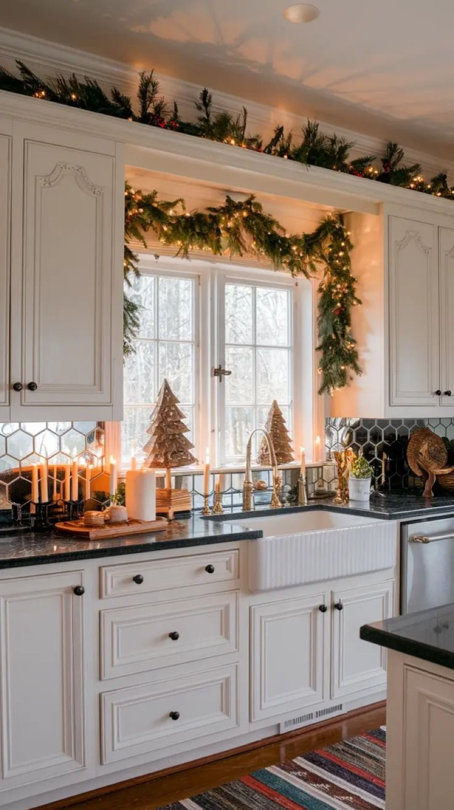
1. Frame the Window Above the Sink in Garland
The window over the sink gets ignored most years, and this kitchen makes it the focal point.
Lit pine garland runs across the top of the window and down both sides here, with a second strand along the crown of the white cabinets above.
Two carved wood trees and a cluster of brass candlesticks sit on the dark counter below, reflected in a mirrored hexagon backsplash.
Let the side strands drop to different lengths rather than matching them. The uneven line is what reads as draped instead of installed.

2. Set a Gingerbread Cookie Jar Against the Cutting Boards
A gingerbread house cookie jar with a tiny brass bell on its door sits on a wood riser here, with cedar and red berries tucked onto its roof.
Two tree-shaped cutting boards and a round one with a red velvet bow stand behind it, and gingerbread tree candles, a gingerbread man candle, and a pair of copper grinders fill in the front.
Lean the boards against the backsplash before placing anything else. They give the whole corner its height.
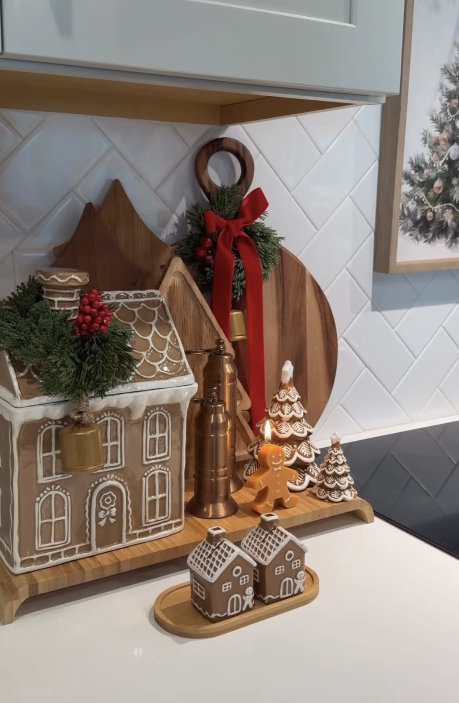
3. Hang Snowflakes and Ornaments Over the Island
Most island decor sits on the counter. This one hangs from the ceiling instead.
Starburst snowflake lights, glass pendant bulbs, and silver and white ball ornaments dangle on wires at different heights over a long white island here.
A gold bottle brush tree and a bowl of red apples are the only things on the counter itself.
A white-and-silver tree glows in the window beyond, and the wood bar stools are tied with white ribbon.
Hang everything from fishing line at three or four different lengths. A single row at one height looks like a light fixture, not a display.
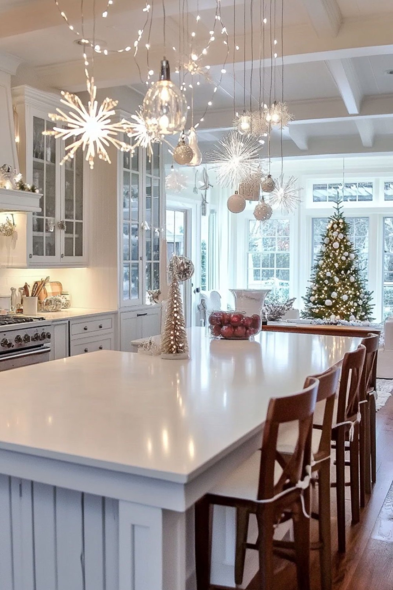
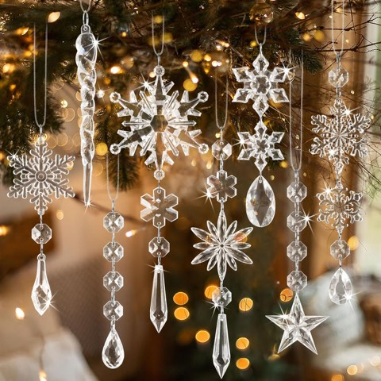
Crystal Snowflake Ornaments for Christmas Tree, Winter Wonderland Decorations, 18 Pcs
Shop on Amazon4. Fill a Long Wood Tray with Gnomes and a Vertical Sign
A narrow tray turns a stretch of counter into one contained display.
A tall vertical Merry Christmas sign stands at the center of a gray wood tray here, with a snowman figurine in a striped scarf beside it and a red Cookies canister at one end.
A Mrs. Claus Peppermints jar, a red crock stuffed with striped rolling pins and candy canes, and a pair of gnome salt and pepper shakers fill the other end.
Pine, red berries, and a single pinecone run along the base.
Stand the sign upright against the backsplash instead of laying it flat. It is what gives a low tray its height.
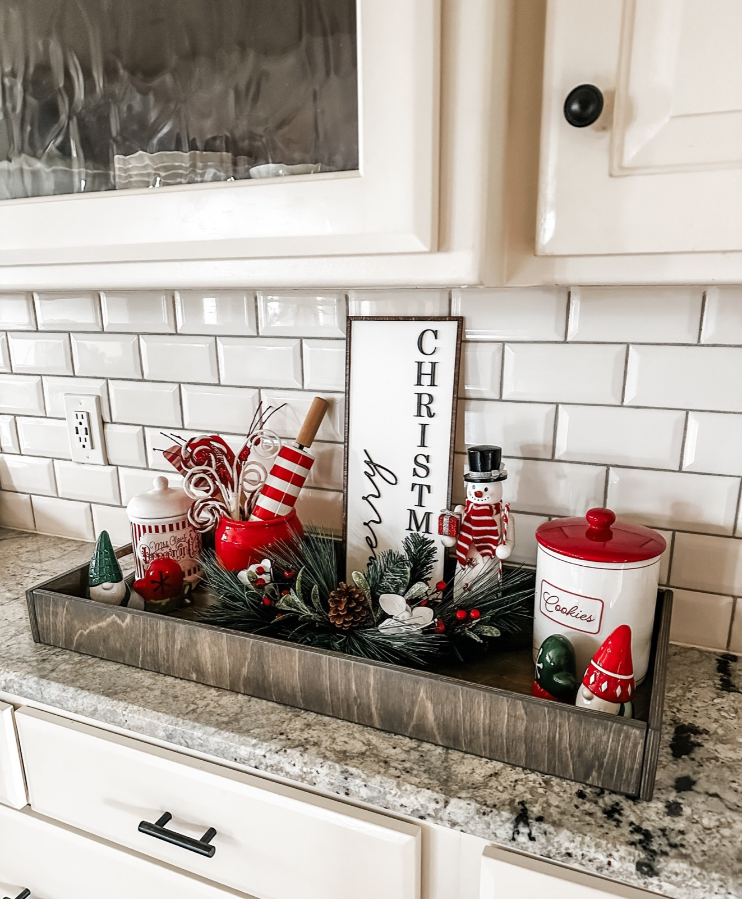
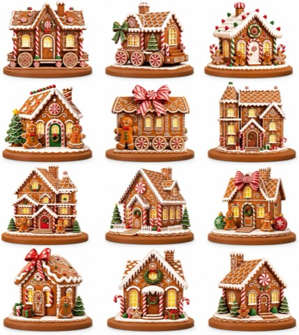
12 Pcs Christmas Gingerbread House Decor, Vintage Xmas Table Centerpiece
Shop on Amazon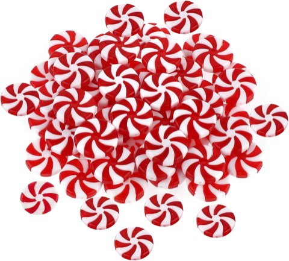
50 Pcs Peppermint Christmas Ornaments, Fake Peppermint Candy for Crafts and Decor
Shop on Amazon5. Run Candles and Ornaments Along the Top of the Cabinets
Above-cabinet garland is the single most common Christmas kitchen move, and this one shows why.
Fresh-looking pine runs the length of warm oak cabinets here, studded with gold ball ornaments, red berries, pinecones, and red and gold ribbon bows, with white pillar candles rising out of it and fairy lights woven through.
A small wreath and a bowl of red ornaments sit on the counter below.
Use flameless candles up there. Nobody can reach a real one safely, and the glow is the whole point after dark.
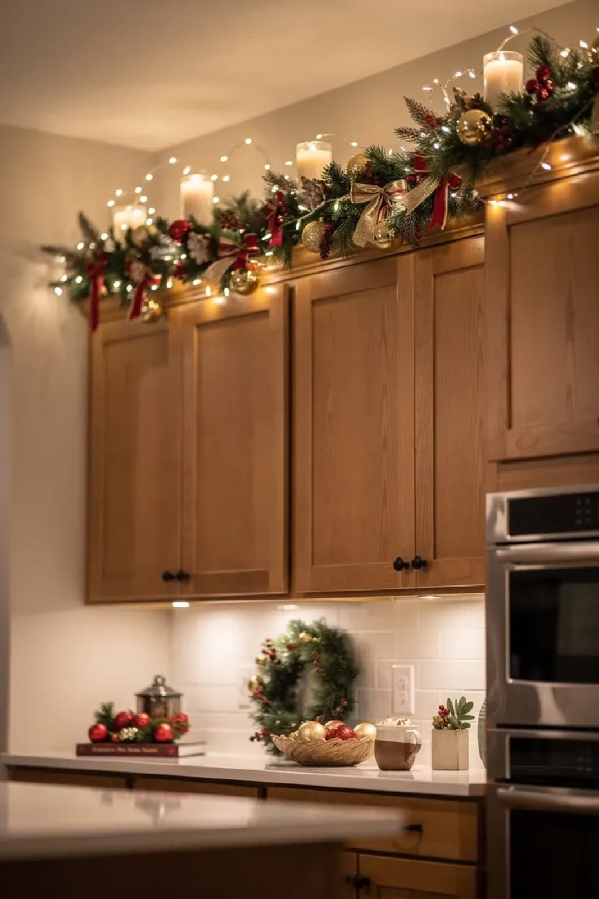
Cindeer Lighted Christmas Garland for Above Kitchen Cabinets, 6 ft
Shop on Amazon6. Line Up Three Nutcrackers Down the Island
Three tall nutcrackers in red coats and gold crowns stand in a row down the middle of this marble island, rooted in a bed of frosted pine and red berries.
Glass jars of gold and silver ornaments sit at either end, with three boxwood wreaths hanging in the window behind.
Buy nutcrackers in two or three heights rather than a matched set. The staggered line reads from the doorway.
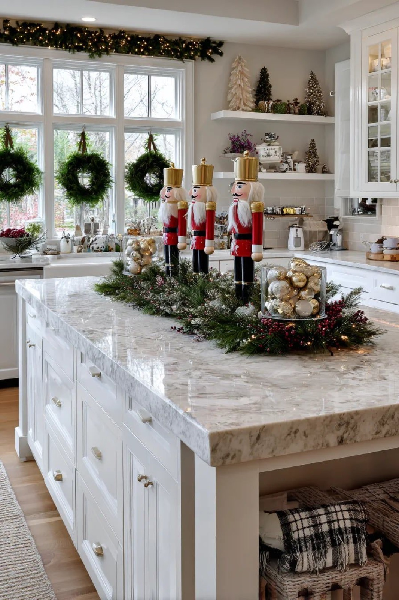

7. Lay a Garland with Red Bows Along the Island Edge
A long white island gets its color from a single garland draped along one side.
Pine swags between two red plaid bows across the island front here, with silver and red ornaments tucked in and lights woven through.
Red candles and a striped canister sit on the marble top, and matching red bows hang in the windows and over the range hood beyond.
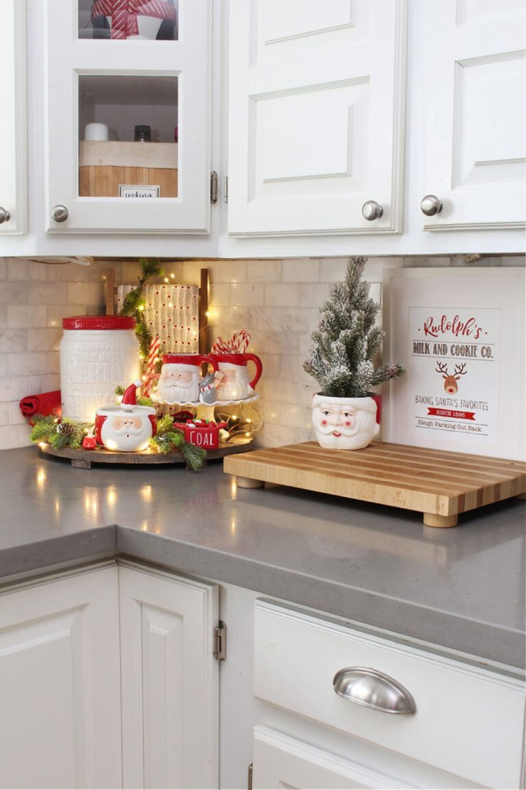
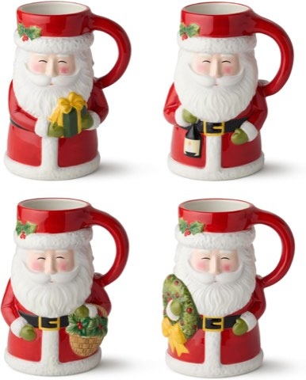
Santa Delight 3-D Mugs, Set of 4, 18 oz Sculptural Santa Face Ceramic Mugs
Shop on Amazon8. Drape a Garland on an Angle Over White Cabinets
This garland does not sit flat on top of the cabinets. It is draped at a slant and falls down both ends.
Pine loaded with red berries, pinecones, kraft-wrapped gift boxes, and gold ribbon rises from the range hood, runs across the upper cabinets, and drops past the window on the far side.
Lights are threaded through the whole length.
A fern, three white canisters, and a cutting board are the only things on the marble counter below.
Tie the miniature gift boxes on with twine so they hang below the greenery instead of sitting on top of it.
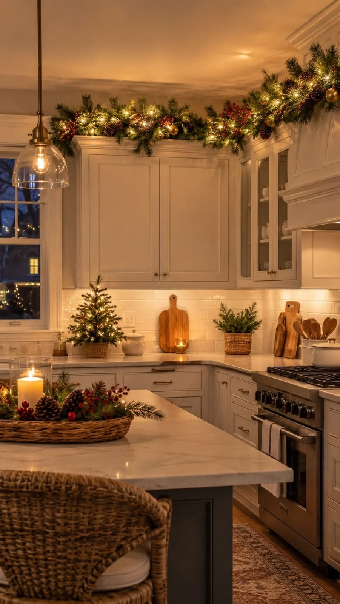
Cindeer Lighted Christmas Garland for Above Kitchen Cabinets, 6 ft
Shop on Amazon
9. Pair Two Gingerbread Houses with a Red Mug on a Basket Tray
A round woven tray holds everything in this island vignette.
Two gingerbread houses with white icing and red velvet bows sit on it here, beside a red stoneware mug, a small tree hung with red balls, a sprig of pine, and a candy cane.
A red gingham towel is tossed on the marble beside the tray.
Choose houses of two different sizes. A matched pair reads as a product set rather than a village.
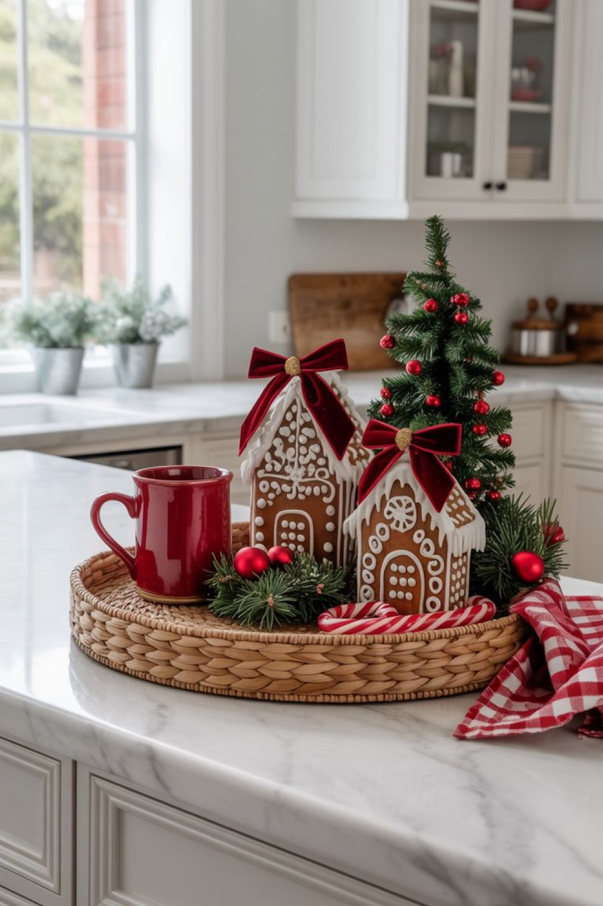
Ceramic Gingerbread House Cookie Jar, 9.5 Inch Tall with Lid
Shop on Amazon
10. Dress the Stand Mixer for the Season
The mixer is already on the counter, so this idea costs almost nothing.
A dark green stand mixer sits on a round wood tray here, with pine and red berries tucked around its head, a green plaid tea towel draped over the bowl, and a Christmas Baking jar of wooden spoons and red spatulas beside it.
Stacked green measuring cups and a small amber candle finish the tray.
Match the towel to the mixer color rather than to the greenery. It is what makes the mixer read as part of the display.
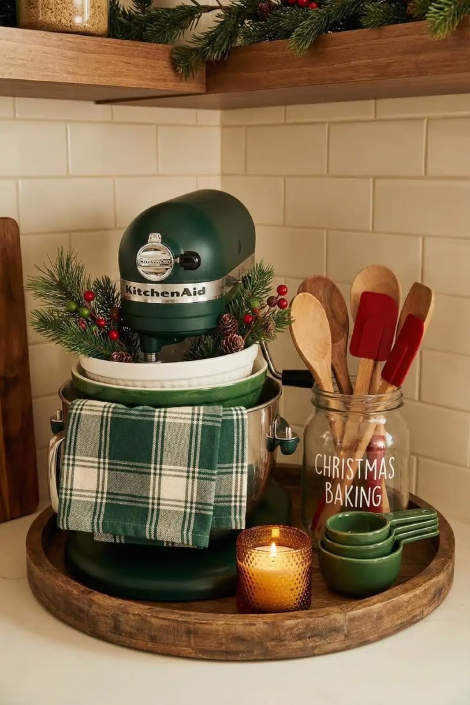
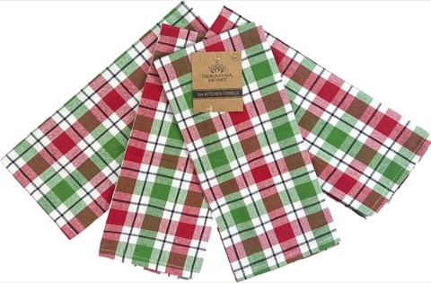
Christmas Plaid Kitchen Hand Dish Towel, Red Green White Tartan, Set of 4
Shop on Amazon11. Hang a Berry Wreath Over the Range Hood
The range hood is the tallest flat surface in most kitchens, and it almost never gets used.
A frosted pine wreath with red berries and pinecones hangs on the white hood cabinet here, over a stainless microwave.
A red MERRY sign sits on the stove, with a red candle on the cooktop and a striped Oh What Fun towel on the oven door.
Gingerbread cookies under a glass dome, two wood boards, and jars of snowman-topped candy fill the counters on either side.
Hang the wreath by a loop of ribbon from the cabinet top rather than nailing into the hood. It comes down in January without a trace.
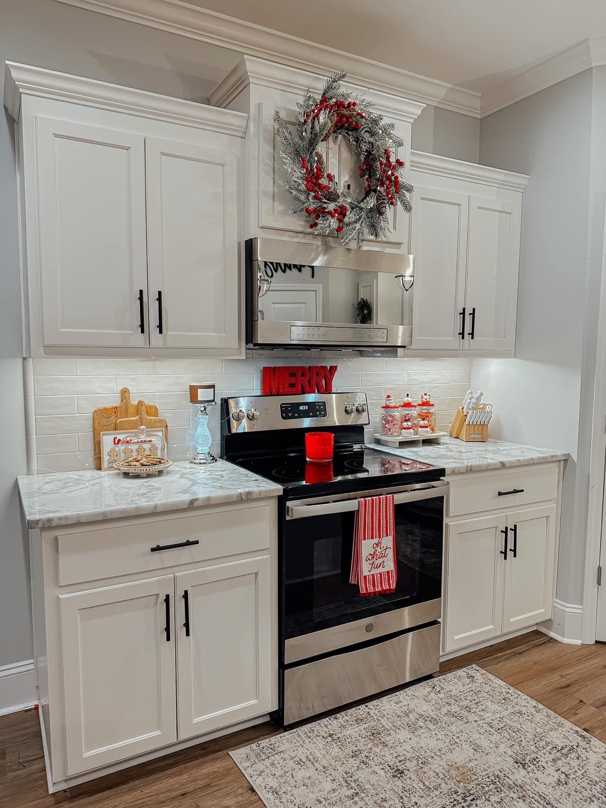
FESTWIND Christmas Tiered Tray Decor, Merry Christmas Block Sign
Shop on Amazon12. Set a Green Ceramic Tree on a Wood Round
A green ceramic tree canister nearly a foot tall anchors this corner, on a rustic wood round with a white cake stand tucked behind it.
Two tree-print mugs, a Tis the Season sign, a white nutcracker, a smaller glass tree, dried orange slices, and a tiny white house fill in around it, with a tree-print towel hung on a rack behind.
Keep everything on the tray green and white. The dried oranges are the only warm color, and they are enough.
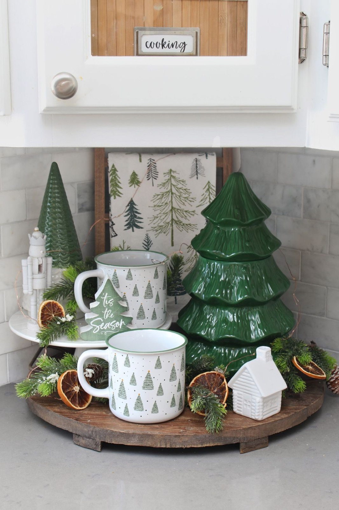
Christmas Plaid Kitchen Hand Dish Towel, Red Green White Tartan, Set of 4
Shop on Amazon13. Line the Windowsill with Flocked Trees
Four flocked trees in white pots stand on the sill and counter around this farmhouse sink, one hung with red berries and all of them lit.
Lit garland runs across the top of the window with three red velvet bows hanging down, and a red striped towel is draped over the sink edge.
Tie each pot with a red ribbon.
It is the small repeat that ties the trees to the bows above.
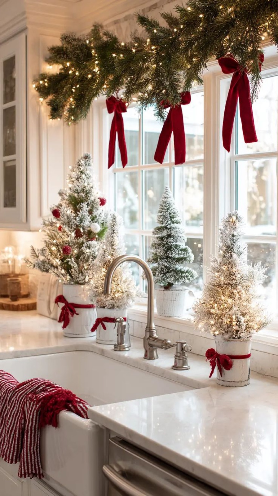
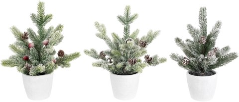
Flocked Pine Mini Artificial Christmas Trees with Pinecones, 12 Inch, Set of 3
Shop on Amazon14. Turn a Hutch into a Gingerbread Bakery
A white hutch gives a gingerbread collection the shelf space a counter never could.
Gingerbread houses, a sleigh pulled by gingerbread reindeer, a North Pole Baking Co. sign, Cookies and Bakery canisters, gingerbread men, and white snowflakes fill every shelf here, with pine and lit garland running along the top.
Group the houses by size, one per shelf. Spread evenly, they stop looking like a collection and start looking like clutter.
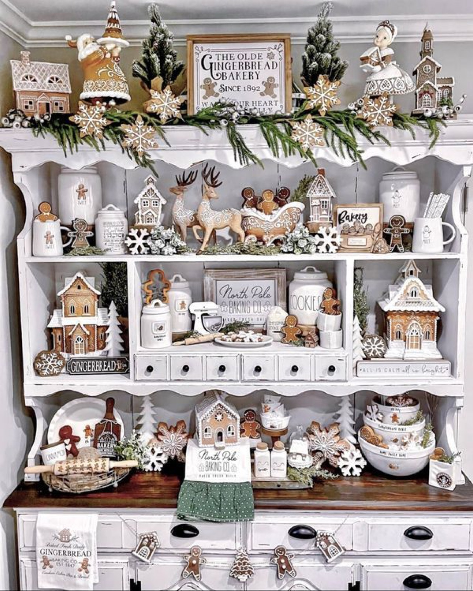
15. Keep an Island Centerpiece to Four Pieces
This is the simplest island on the list.
A round wood tray holds a white ring vase of pine and red berries tied with a burgundy ribbon, an amber candle, a small bottle brush tree, and two brass deer.
Nothing else sits on the speckled granite around it.
A striped towel on the oven door is the only other red in the room.
Four objects on one tray will always look more intentional than ten scattered across the counter.
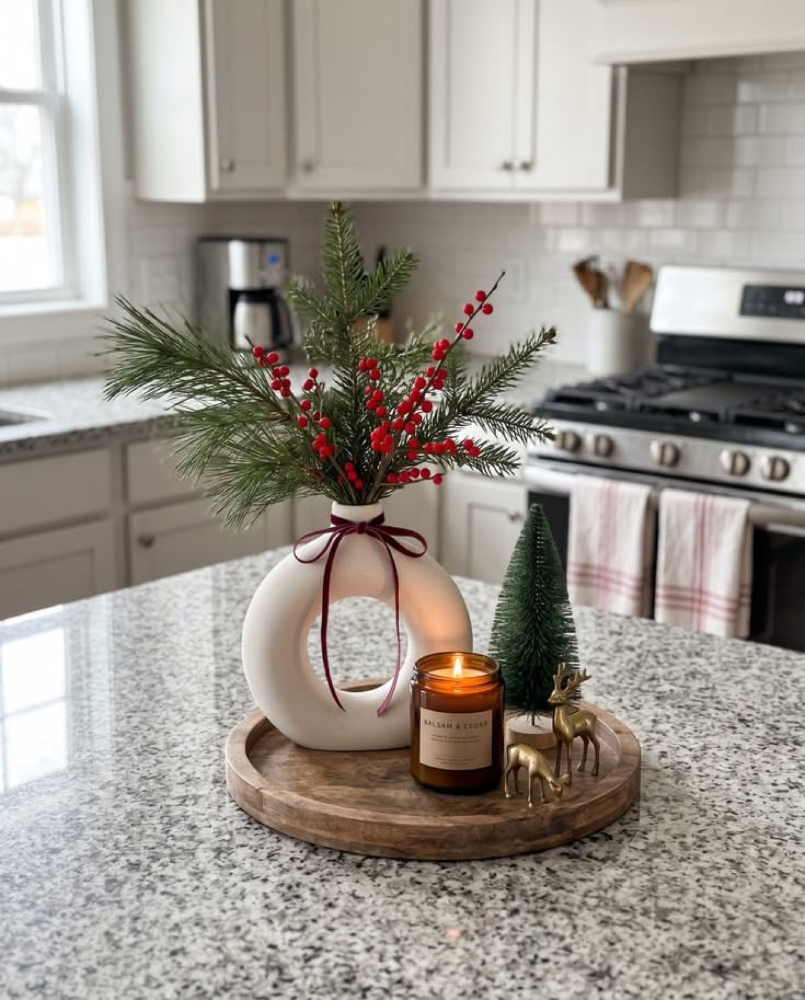
Amagic Gray Glass Flameless LED Candles, Battery Operated, Set of 3
Shop on Amazon16. Hang a Santa's Workshop Sign Above the Cabinets
A vintage-style Santa's Workshop sign is the centerpiece of this above-cabinet display.
Flocked trees with red ornaments, candy cane cones, a polka dot tree, and a wood snowman flank it, with flocked garland and peppermints running the length of the white cabinets below.
On the counter, a Hot Cocoa Bar rack holds a gnome and Santa mugs, with a Bread box, a Claus and Co. crate, and a mug tree nearby.
Lean the sign against the wall rather than hanging it, so it can tilt forward and read from the floor.
Everything up there should be big enough to see from across the room. Small objects disappear at that height.
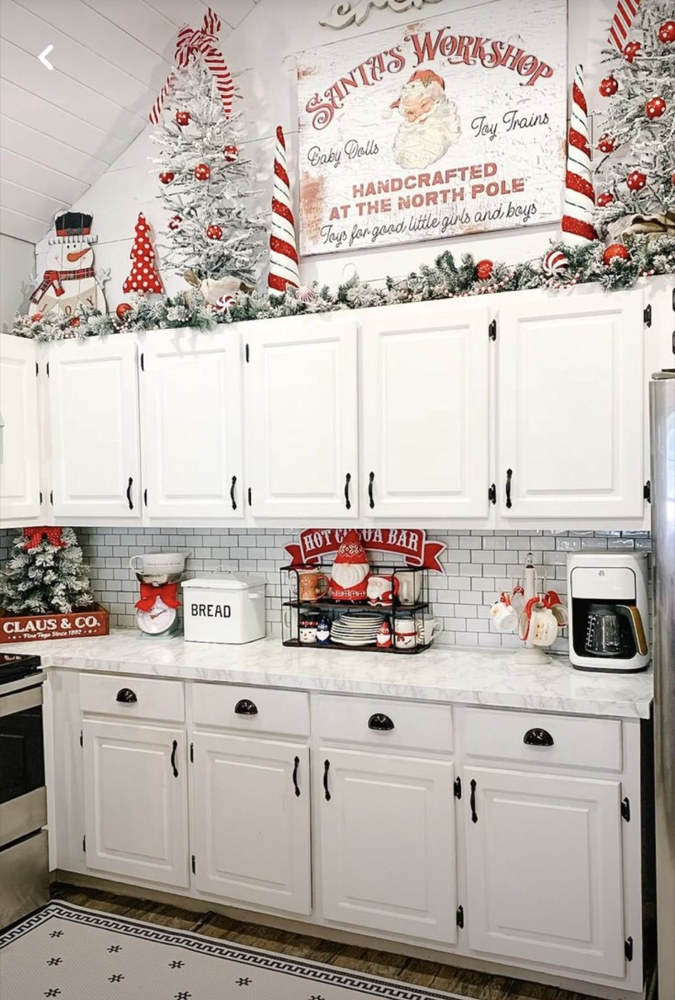
Cindeer Lighted Christmas Garland for Above Kitchen Cabinets, 6 ft
Shop on Amazon17. Fill Apothecary Jars with Peppermints Down the Island
Glass jars do what a bowl cannot. They show the candy from the side.
Five lidded apothecary jars of candy canes, peppermint swirls, and red and white candies line this marble island, with lit garland and red berries running beside them.
A stack of red-patterned plates and striped napkins sit at one end, and stockings hang on the mantel beyond.
Use jars in three different heights and shapes. Identical jars read as a store display.
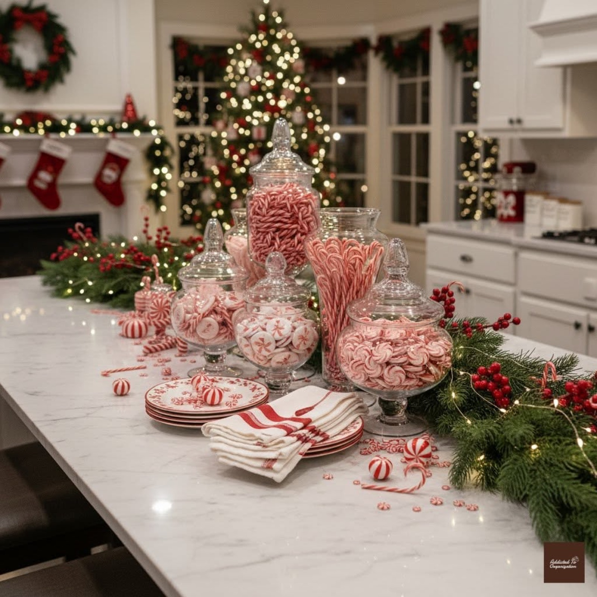
50 Pcs Peppermint Christmas Ornaments, Fake Peppermint Candy for Crafts and Decor
Shop on Amazon18. Build a Coffee and Cocoa Corner Under Open Shelves
An espresso machine, a Coffee and Cocoa Corner sign, and a wood tray of Cocoa mugs, candy canes, and a copper canister fill this counter, under two wood shelves holding cocoa packets, cinnamon sticks, and a jar of marshmallows.
Lit pine runs along the top shelf.
Put the sign at eye level between the shelves and the counter. It names the corner before anyone reads anything else.
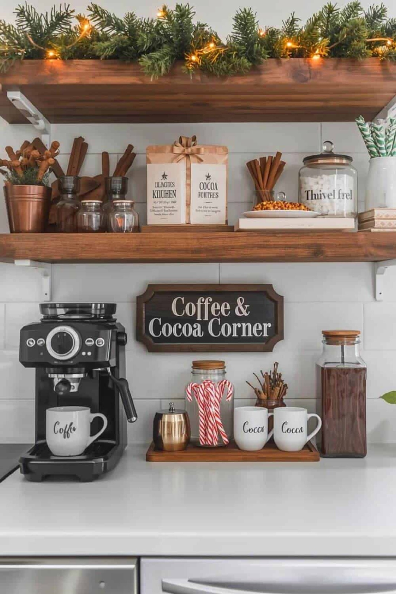
Stella Baico 3-Pack Glass Apothecary Jars with Lids
Shop on Amazon50 Pcs Peppermint Christmas Ornaments, Fake Peppermint Candy for Crafts and Decor
Shop on Amazon19. Turn the Range Hood into a Gingerbread House
This is the most ambitious idea here, and it starts with the hood.
A wood range hood is trimmed in white faux icing, candy, and a peppermint wreath to read as a gingerbread house roof here, with candy cane garland down both sides.
Gingerbread houses and flocked trees sit on the island, and peppermint-wrapped bar stools and gingerbread wreaths finish the room.
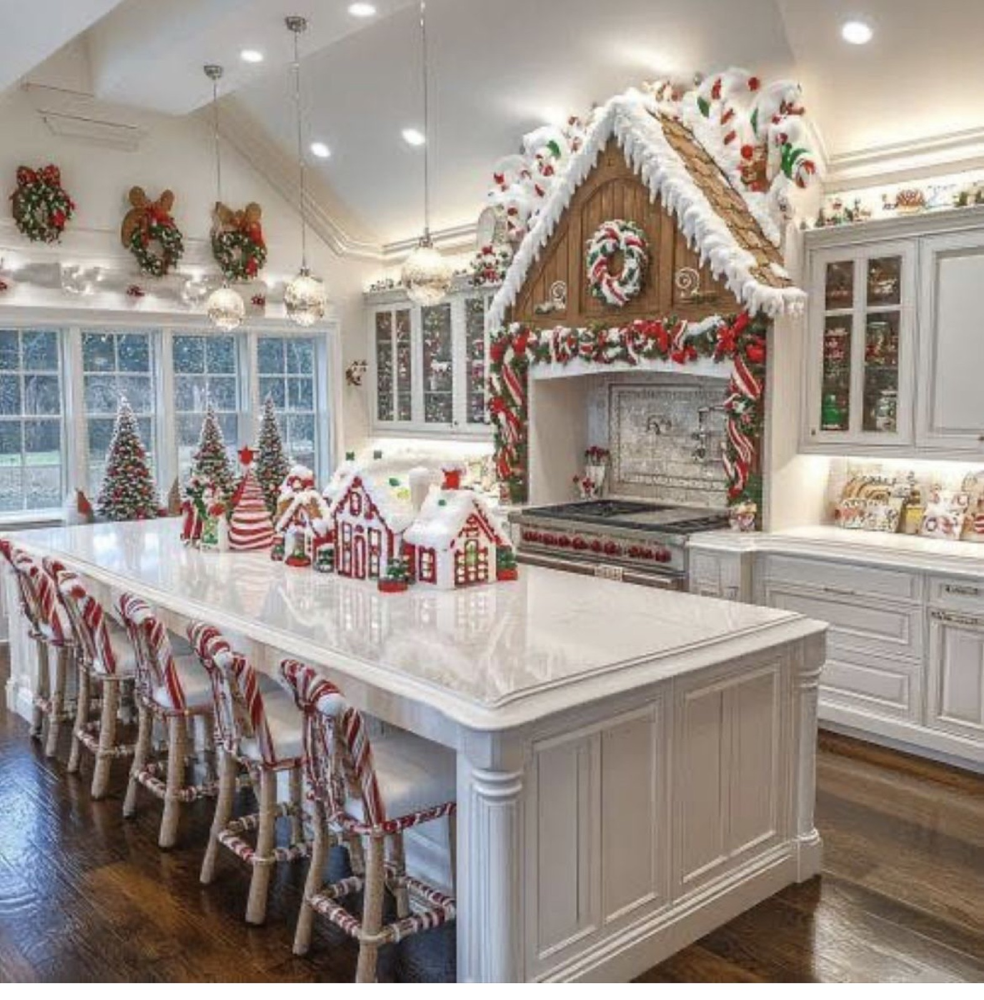
20. Pot a Live Tree on the Island with Wrapped Gifts
A real tree in a pot does more for a kitchen than any amount of garland.
A small pine in a knit-covered pot stands on this island here, strung with lights and a few red balls.
Two wrapped gifts in red ribbon and a woven tray of greenery and a tiny present sit at its base.
String lights hang along the backsplash behind.
Keep the tree under two feet tall. Anything larger blocks the view across the island.
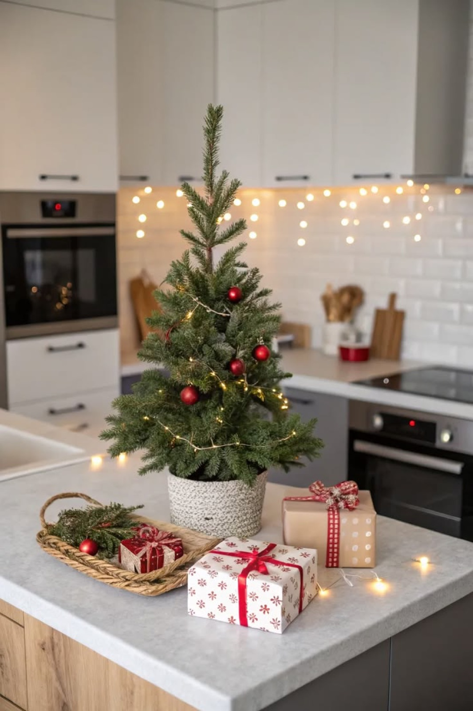
Champagne Gold Christmas Ball Ornaments Set with Artificial Flowers
Shop on Amazon
21. Lean a Wood Tree Board Behind the Stove
A tree-shaped cutting board and a smaller board hung with a mini wreath lean against the backsplash behind this cooktop, under a cedar wreath with a red ribbon on the hood.
A black and white check kettle, a potted pine in a basket, lit mini trees, and a stack of rolling pins and plaid towels fill the counter.
Tie the wreath ribbon to match the one on the small board. The repeat is what links the hood to the counter.
Move the boards before cooking. They are decor, not heat shields.
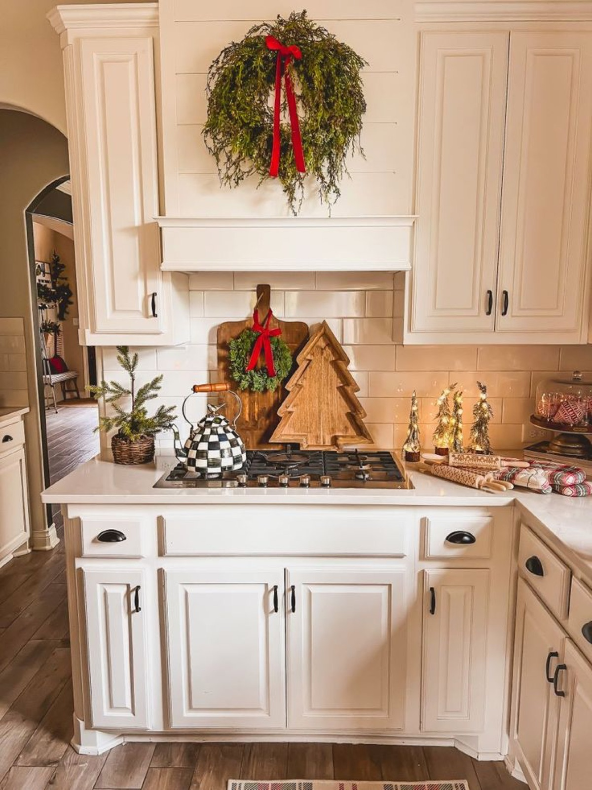
COLORSPEC 24 Inch Eucalyptus Wreath with Olive Leaves and Berries
Shop on AmazonTreen Art Star Tree Shaped Acacia Wood Cutting Board
Shop on Amazon22. Hang Mini Wreaths on the Cabinet Doors
Cabinet doors are flat, vertical, and everywhere, which makes them ideal for small wreaths.
Baby's breath and pine wreaths with red gingham bows hang on the upper doors here, with lit garland over the window and red canning jars on an open shelf.
Marshmallow-topped mugs on a wood tray and a gingham towel on the drawer finish the butcher block counter.
Hang the wreaths from ribbon looped over the door top, not from hooks. The doors still open, and nothing gets screwed in.
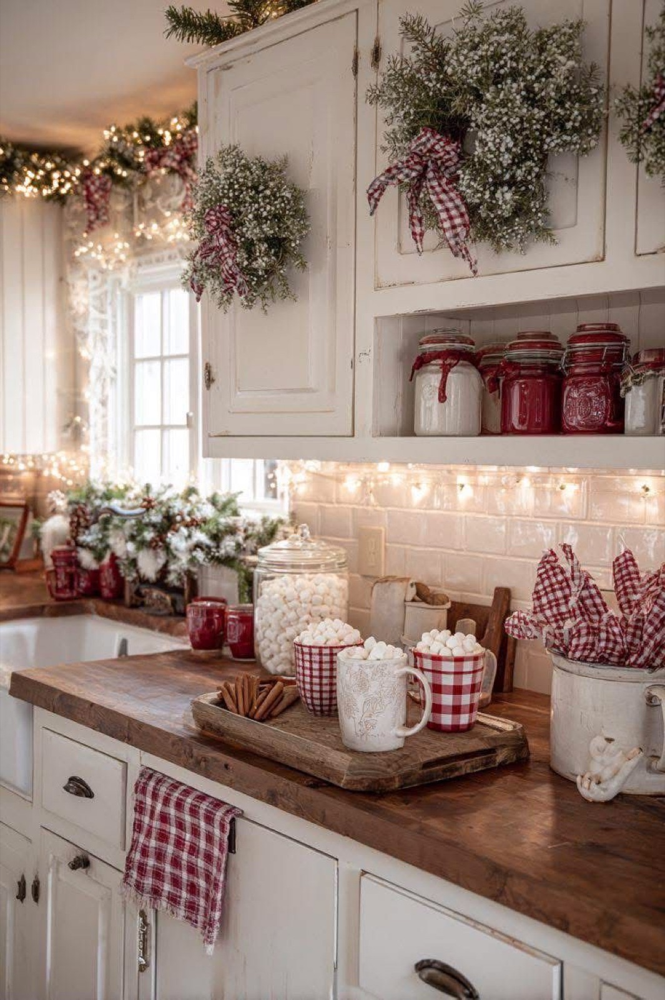
Cindeer Lighted Christmas Garland for Above Kitchen Cabinets, 6 ft
Shop on Amazon23. Run a Berry Garland Down the Island Like a Runner
A thick red berry garland runs the length of this white island, in place of a cloth runner.
Brass candlesticks with white tapers rise out of it at different heights, with a wood bowl of red apples and a vase of red berry branches at one end.
A boxwood wreath hangs in the room beyond.
Set the candlesticks into the garland, not beside it.
The berries should hide their bases so the candles look like they grew there.
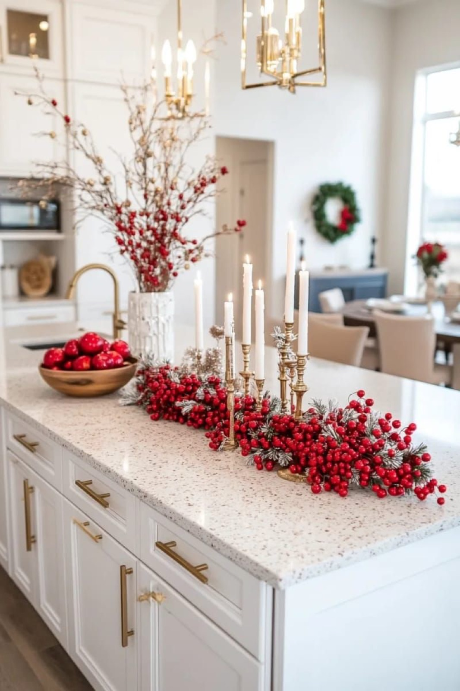
Gold Taper Candle Holders Set of 6, Brass Metal Candlesticks
Shop on Amazon24. Decorate the Open Shelf Over the Stove
A single open shelf gets frosted garland with red balls and pinecones along its front edge here, with a rustic wood tree, white pillar candles, and a wood clock on top.
A striped and a check towel hang from the rail below, and a bottle brush tree and bowl of oranges sit on the butcher block.
Keep the garland on the front of the shelf so the things on top stay visible.
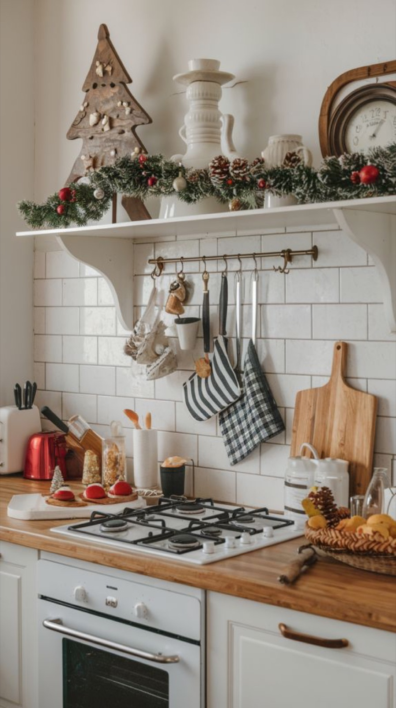
Mud Pie Christmas Wooden Carved Tree Sitter, Large
Shop on AmazonCindeer Lighted Christmas Garland for Above Kitchen Cabinets, 6 ft
Shop on Amazon25. Set a Two-Tier Tray Against the Subway Tile
A white tray with a gold finial does cocoa-bar duty on this counter.
A red Christmas mug, a Coffee sign, and a wood cup of candy canes fill the top tier, with a Hot Cocoa Bar chalkboard, a jar of marshmallows tied with gingham, a snowman shaker, and a gingerbread cookie below.
A flocked tree stands beside it.
Keep the tray tight against the backsplash. In a working kitchen, the counter in front of it needs to stay clear.

50 Pcs Peppermint Christmas Ornaments, Fake Peppermint Candy for Crafts and Decor
Shop on Amazon26. Build a Gingerbread Village Across Both Levels
Flat wood gingerbread houses in every size line the tops of these cabinets and run the length of the counter, standing in drifts of cotton snow with colored lights.
Larger houses sit at the center of the backsplash under the range hood, with bottle brush trees between them.
Keep the big houses low and the small ones high. The eye reads the whole village as one street that way.
6 ft Gingerbread Man Christmas Garland with 30 Lights
Shop on AmazonMr. Christmas 9.5 Inch Ceramic Lit Gingerbread House Cookie Jar
Shop on Amazon27. Light the Garland and Dim Everything Else
This kitchen is styled for evening.
Lit garland with pinecones, red berries, and gold ornaments runs across the top of the white cabinets here, with a single pendant light glowing over the counter.
A lit mini tree, a potted herb in a basket, and a candle on a wood board sit on the backsplash shelf, and a wicker basket of pine, pinecones, and a pillar candle fills the island.
Snow and a lit house are visible through the window.
Put the garland lights and the island candle on the same warm color temperature. Mixed whites is what makes a lit kitchen look cold.
K-Kraft Christmas Gift Tags, 25-Pack, with Red and White Baker's Twine
Shop on AmazonCindeer Lighted Christmas Garland for Above Kitchen Cabinets, 6 ft
Shop on Amazon28. Keep It to a Nutcracker and a Tree in a Rattan Tray
A white nutcracker and a flocked tree share a round rattan tray on this island, with two dried orange slices and a sprig of eucalyptus on a small plate between them.
A linen napkin is tucked beside the tray, and nothing else sits on the stone counter.
The warm wood cabinets behind do the rest of the work.
Choose a nutcracker in white rather than red when the cabinets are already warm.
It is what keeps a simple tray from looking busy.
2 Pcs Gold Christmas Nutcracker, 15 Inch Wooden Figure
Shop on AmazonFlocked Pine Mini Artificial Christmas Trees with Pinecones, 12 Inch, Set of 3
Shop on Amazon29. Go Gold and Champagne for a Glam Kitchen
There is no red in this kitchen at all.
A tree hung with gold, champagne, and silver balls stands beside the island here, with two stand mixers under the cabinets and gold-rimmed plates, textured gold glasses, and a mirrored tray on the marble.
A single oversized gold ornament sits by the faucet.
Pick one metal and stay with it. Gold handles, gold faucet, gold ornaments is what makes this read as a scheme.
Champagne Gold Christmas Ball Ornaments Set with Artificial Flowers
Shop on Amazon
30. Hang Red Pendant Lights Over a Butcher Block Island
Three red metal pendants hang over the island in this white farmhouse kitchen, with a poinsettia in a glass vase on the wood top.
A red gingham towel hangs from the island rail, red enamel pans hang over the stove, and a red striped runner covers the floor.
Red pendants are a permanent change, so start with the towels and pans if you are not sure. The red lights are the step after that.
Santa Delight 3-D Mugs, Set of 4, 18 oz Sculptural Santa Face Ceramic Mugs
Shop on Amazon50 Pcs Peppermint Christmas Ornaments, Fake Peppermint Candy for Crafts and Decor
Shop on Amazon31. Seat a Gingerbread Family on a Two-Tier Tray
Plush gingerbread figures in red plaid bows and a chef hat sit in white mugs on the top tier of this wood stand, with a Yum plate between them and a gingham bow on the handle.
A gingerbread house, two more figures, and iced gingerbread cookies fill the bottom tier, with flocked pine tucked all around.
A Gingerbread St. sign hangs on the wall behind, and more flocked trees sit on the counter beyond.
12 Pcs Christmas Gingerbread House Decor, Pink Pastel Table Centerpiece
Shop on Amazon32. String a Merry Christmas Banner Over the Stove
A small galley kitchen gets most of its holiday from one wall.
A gold-lettered Merry Christmas banner hangs on twine across the subway tile here, with pine garland and red bows along the tops of the cream cabinets and a smaller swag on the lower drawers.
A bottle brush tree, a white mug, and a bowl of oranges sit on the butcher block.
A second lit garland frames the doorway in the foreground.
Hang the banner with removable hooks on the grout lines. It comes off tile cleanly in January.
Lumina Garden Bright Red Merry Christmas Banner, 6ft Velvet Letter Garland
Shop on AmazonCindeer Lighted Christmas Garland for Above Kitchen Cabinets, 6 ft
Shop on Amazon33. Stuff a Santa Mug with Berries and Bells
A ceramic Santa face canister holds a tall bunch of cedar and red berries at the center of this wood tray, with two red berry cone trees beside it.
Three brass bells on jute cord and three brass candlesticks with lit tapers fill the rest, with pine garland and a strand of fairy lights wrapped around the base.
A gingerbread house and more berries sit on the counter behind, under brass sconces.
Vary the candlestick heights by at least an inch each. Three matching heights flatten the whole arrangement.
Santa Delight 3-D Mugs, Set of 4, 18 oz Sculptural Santa Face Ceramic Mugs
Shop on AmazonVintage Gold Christmas Bells on Jute Rope, Wreath Door Decor
Shop on Amazon34. Build a Mug Wall on Floating Shelves
Four wood shelves hold a dozen Christmas mugs here, tree prints, plaid, red snowflakes, a gingerbread man, and a candy cane stripe, with a But First Coffee print, a snowman, and a lit house on top.
A pod coffee maker, a jar of beans, a mug tree, and a basket with a flocked tree fill the wood counter below, with a Good Coffee Good Mood sign and a lit wreath in the window.
Group the mugs by color on each shelf rather than mixing them. Red on one, green on another, white on the third.
A trailing pothos down one side is what keeps a mug wall from looking like a shop.
CREATCABIN But First Coffee Wood Sign, 12 x 6 Inch
Shop on AmazonQIKSION Christmas Coffee Mugs, Set of 6, 14 oz Hot Chocolate Mugs
Shop on Amazon35. Trim the Island in Gingerbread Cookies
A kitchen with warm oak cabinets suits a gingerbread theme better than a white one does.
Lit garland runs above the cabinets and the range hood here, with gingerbread cookie cutouts hung from the hood and along the wall.
The island front is trimmed in gingerbread shapes, and the bar stools wear red and white gingham covers.
A gingerbread house and gingerbread men sit on the counter by the sink.
Hang the cookie cutouts at different heights on clear line. A straight row looks like a border, not a bakery.
6 ft Gingerbread Man Christmas Garland with 30 Lights
Shop on AmazonCeramic Gingerbread House Cookie Jar, 9.5 Inch Tall with Lid
Shop on Amazon36. Dress a Small Corner with Santa Mugs and a Sign
A corner of gray counter gets a wood lazy Susan here, holding two Santa mugs of candy canes, a white canister, a Coal dish, a Santa cookie jar, and a lit mini tree in a Santa pot.
A framed Rudolph's Milk and Cookie Co. print leans against the marble backsplash beside a wood cutting board.
Set the tray in the corner where two walls meet. It is where a small display looks largest.
Cindeer Lighted Christmas Garland for Above Kitchen Cabinets, 6 ft
Shop on Amazon
Start with the Garland
Thirty-six ideas is a lot, but no kitchen needs all of them at once.
Pick a handful that fit the size of the room and the time you actually want to spend.
If you are starting from scratch, garland over the cabinets and a few mugs on display will get you most of the way there.
Everything else on this list is layering on top of that base.
Decor that still lets you cook without moving ten things out of the way will always get used more than decor that only looks good from across the room.
Whatever you choose, the kitchen is one of the easiest rooms to redo every year, since most of this packs away small and comes right back out next December.